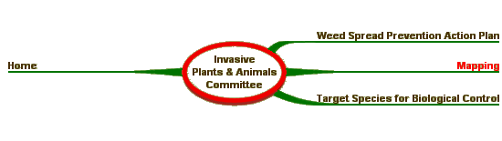

Weed Mapping
Weed mapping is useful at a range of scales and is one of the keys to operating a successful weed management plan. The purposes for mapping are: In order for weed mapping to be of use at all scales a set of national core attributes has been endorsed by the Australian Weeds Committee. These are supported by "A Field Manual for Surveying and Mapping Nationally Significant Weeds" published by the Bureau of Rural Sciences, which describes methods, recording and reporting, field data sheets for on the ground use. The above documents are available for download by clicking the links below. A Field Manual for Surveying and Mapping Nationally Significant Weeds More information is available from the Bureau of Rural Sciences at www.daff.gov.au/brsweeds.
Australian Weeds Strategy | Weed Identification | |
|
Site Content and Operation: John Thorp Australia Telephone: (03) 6344 9657 Fax: (03) 6343 1877 |
Site Design - Computer Support Tasmania | |
| © Australian Weeds Committee |